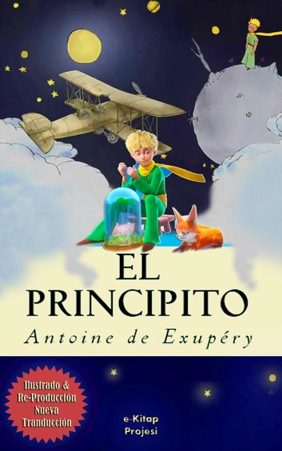

Buscando a Alaska
por:Diego Díaz
fecha:Jueves 30 de Abril de 2020
“Buscando a Alaska” relata la historia de los jóvenes y sus aventuras dentro del internado, donde se sienten muy afectados por la trágica muerte de su amiga Alaska, quien vive el sufrimiento de la muerte de su madre, el cual la conduce a su propia muerte.
leer mas...
Las Ventajas de ser invisible
por:Diego Díaz
fecha:Jueves 30 de Abril de 2020
Charlie es un joven socialmente torpe y siempre está viendo la vida desde la barrera, hasta que dos estudiantes carismáticos se convierten en sus mentores. Sam y su hermanastro Patrick ayudan a Charlie a descubrir las alegrías de la amistad, el primer amor, la música y mucho más, mientras que un maestro provoca que él sueñe con ser un escritor. Sin embargo, mientras sus nuevos amigos se preparan para ir a la universidad, su tristeza interior amenaza con destruir su confianza.
leer mas...
La Biblia de los caidos

por:Diego Díaz
fecha:Jueves 30 de Abril de 2020
El mundo cuenta con un lado oculto, una cara sobrenatural que nos susurra, que se intuye, pero que muy pocos perciben. La inmensa mayoría de las personas no es consciente de ese lado paranormal... ni de sus riesgos.
leer mas...
El principito

por:Diego Díaz
fecha:Jueves 30 de Abril de 2020
En este libro, un aviador —Saint-Exupéry lo fue— se encuentra perdido en el desierto del Sahara, después de haber tenido una avería en su avión. Entonces aparece un pequeño príncipe. ... El principito vive en un pequeño planeta, el asteroide B 612, en el que hay tres volcanes (dos de ellos activos y uno no) y una rosa.
leer mas...
20 comentarios